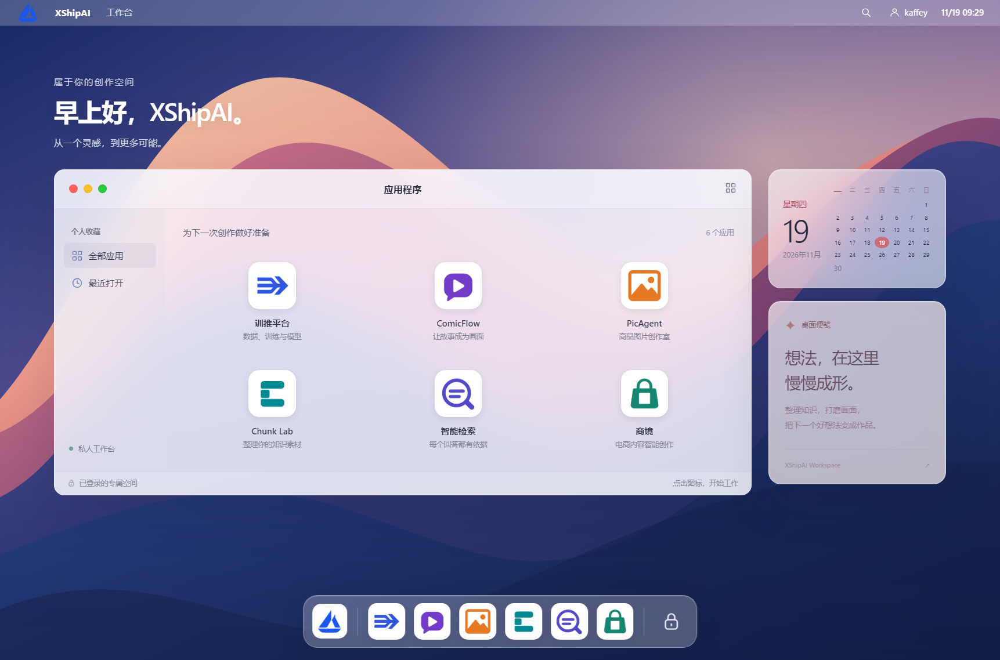
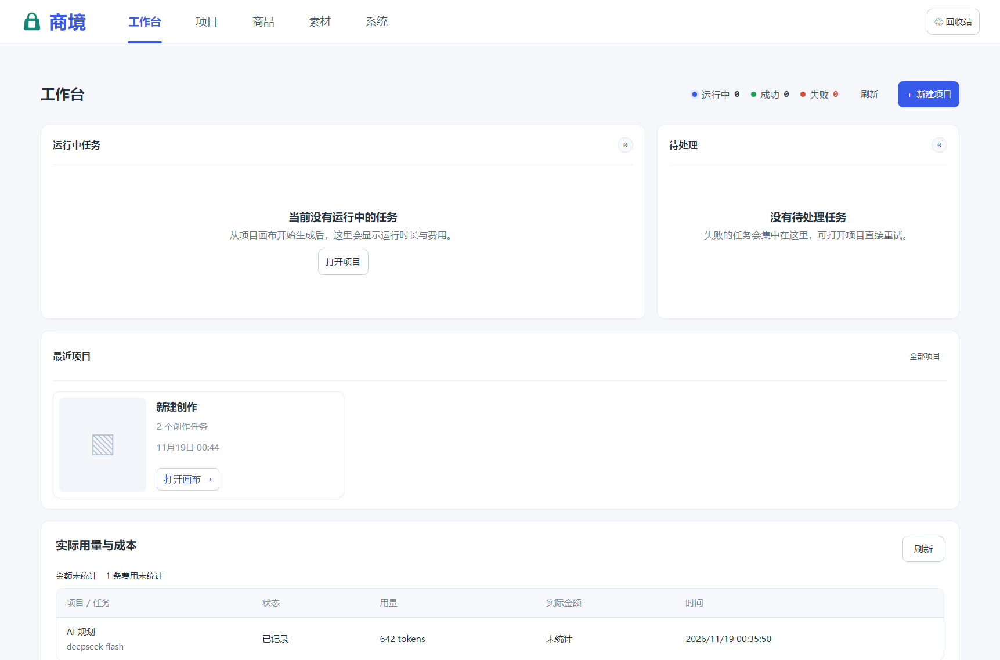
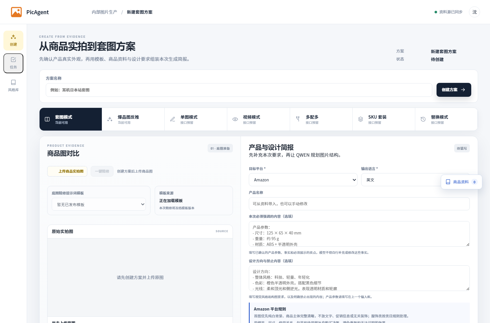
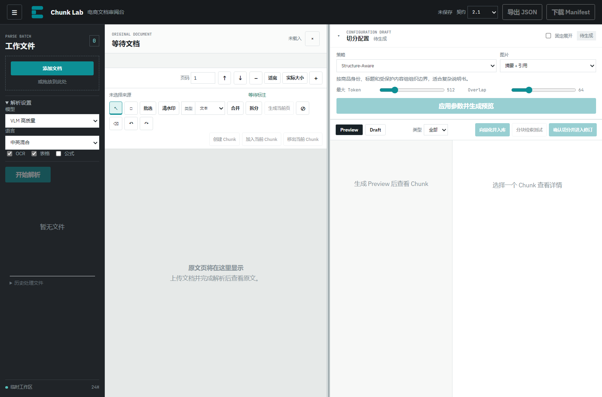
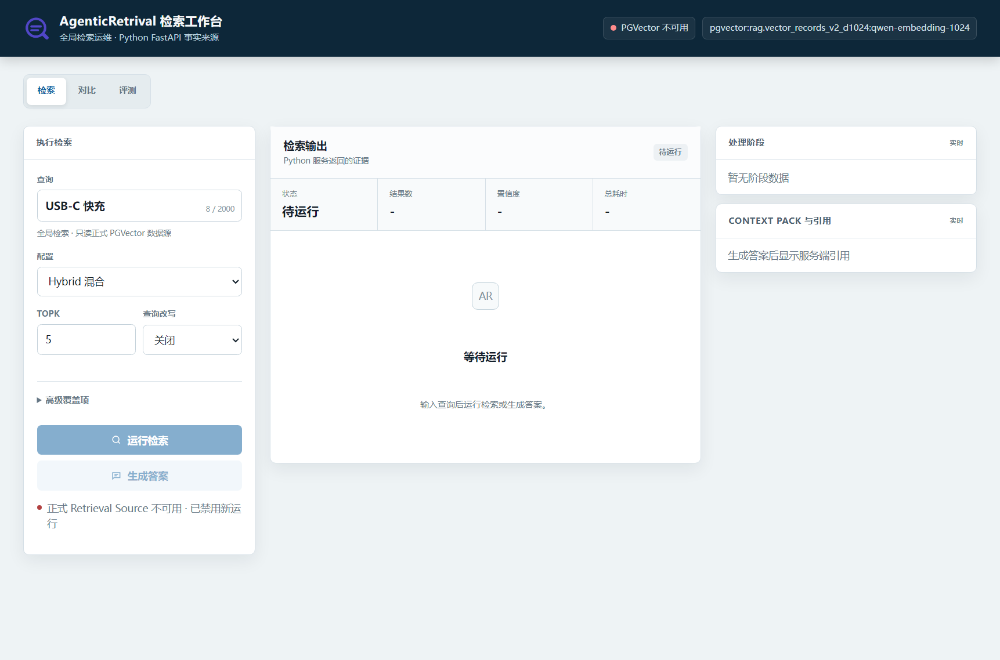
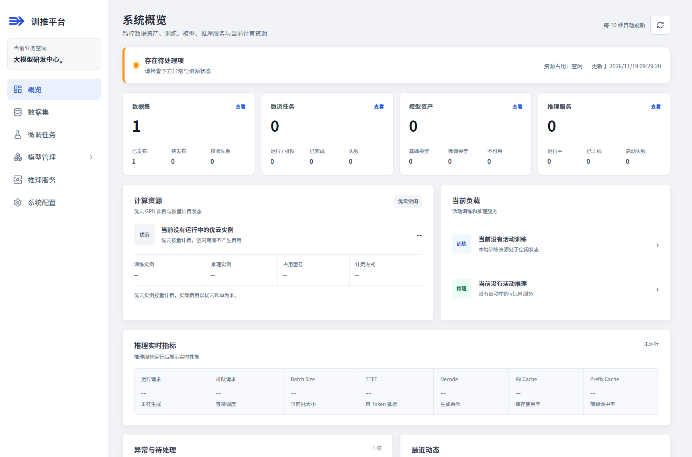
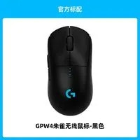
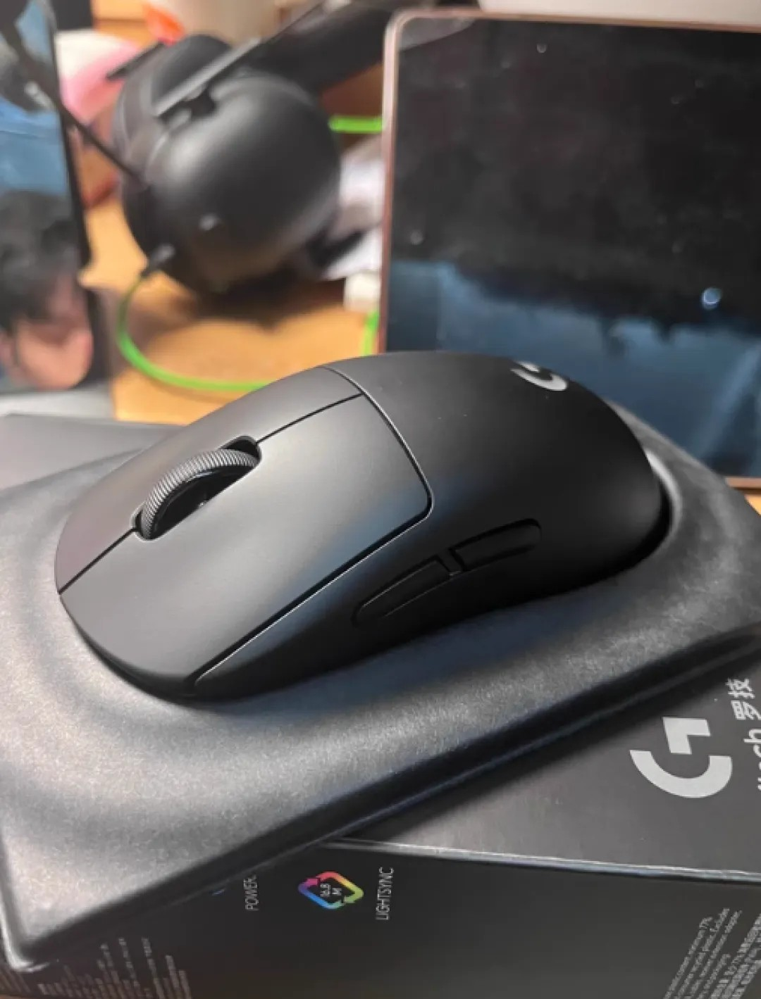
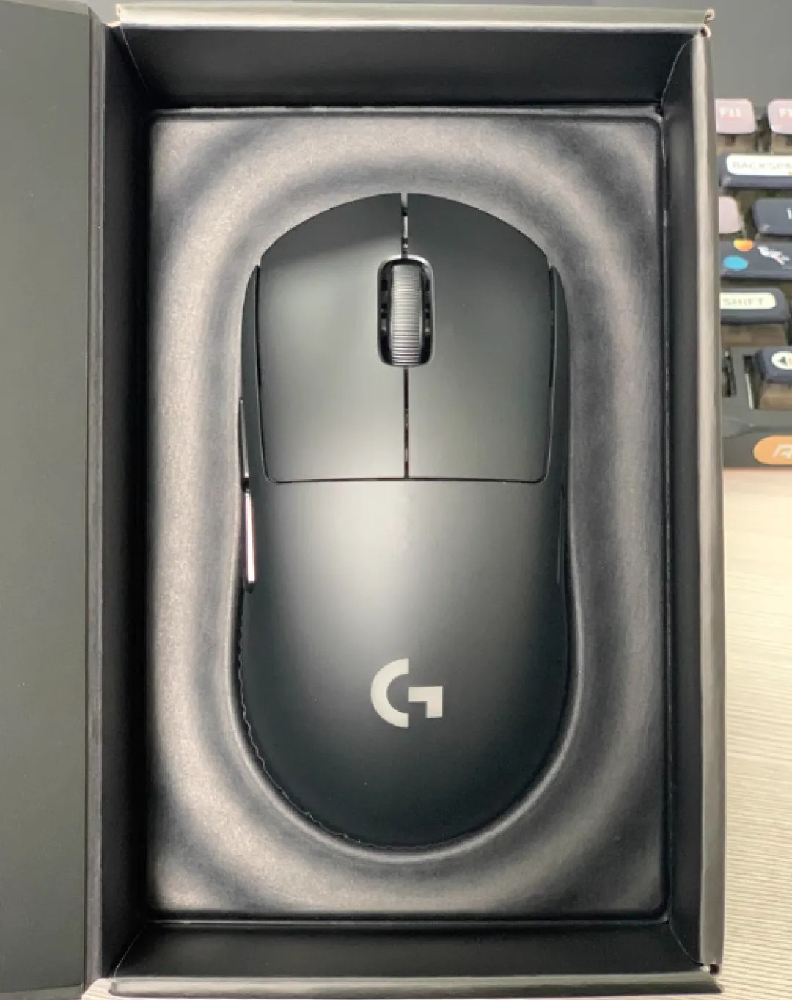
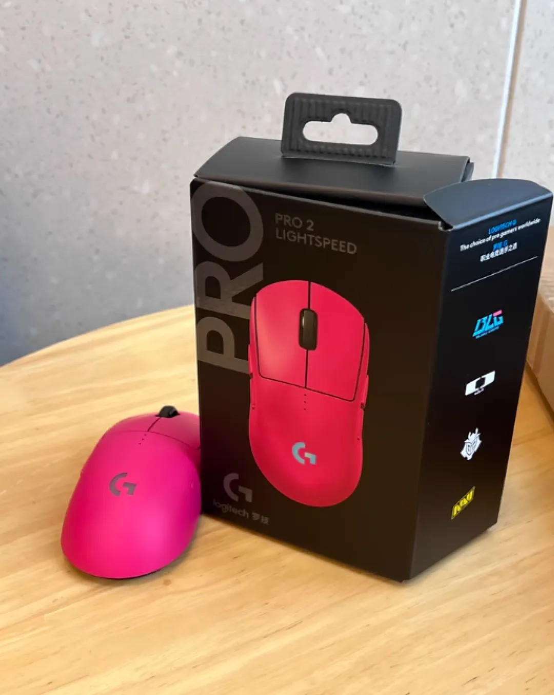

AI 综合工作台 · 统一登录入口
登录后从桌面点击图标进入各应用。若直接打开子应用页面，会被重定向回统一登录页。访问前请确认服务器与网络可达。
一个统一入口下的电商内容生产系统：从可信文档与检索，到套图、漫剧、创作画布，再到模型训练与推理服务。重点展示如何把不确定的 AI 能力做成可靠、可追溯、可运营的工程系统。
现场演示时由讲解人打开统一工作台，并现场输入账号口令；本页与仓库均不展示任何口令或密钥。
登录后从桌面点击图标进入各应用。若直接打开子应用页面，会被重定向回统一登录页。访问前请确认服务器与网络可达。
统一网关负责登录和逐应用授权；六个应用共享基础设施但各自数据库与数据卷隔离。
这里只列现场演示的主线；完整版见仓库内的 PRESENTATION.md。
截图来自本地演示环境，已检查不含真实口令或密钥。下方是总览；完整逐步流程（37 张）见仓库 screenshots/steps/。






四张鼠标商品图是各项目通用的输入素材：白底主图、实拍细节、包装和场景图，可用于文档审阅、套图生成、视觉参考、图像理解等演示链路。图片已去除第三方水印。




商品图片仅作为项目输入素材用于技术演示与作品集说明，不代表任何品牌授权或商业合作。